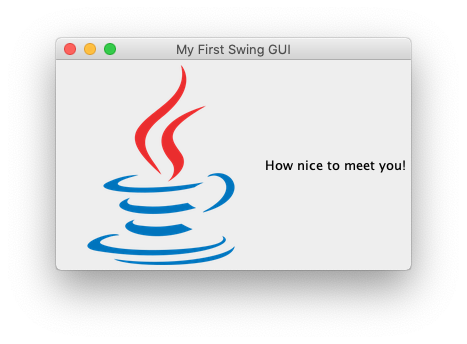

My First Swing GUI

Goal:
We are going to make a simple GUI (pronounced gooey). GUI stands for Graphical User Interface, which in this case means a window and everything that is drawn on it. The user will see a window (frame) with a greeting and image similar to the one shown above.
Steps:
- Create a JFrame. A JFrame is a window that has a border and title. It will contain one component of your GUI. In this program, it will contain a JPanel (see next). JFrames are invisible when you create them, so you will need to make it visible (follow instructions in the code).
- Create a JPanel and add it to the JFrame. A JPanel is a simple container that provides space for your program to add more components. In this program, it will contain a JLabel (see next).
- Create a JLabel and add it to the JPanel. A JLabel allows you to display small amounts of text, and/or an image. In this program, both will be displayed (follow instructions in the code).
- Packing a JFrame causes it to resize itself so that the its components are visible. If you do anything to change the size of its contents, a JFrame should be packed again.